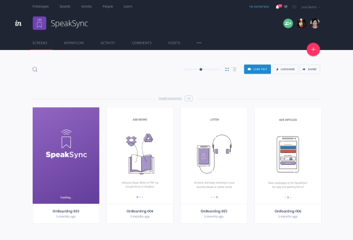

Pinned Tweet
I wrote about one of my exercises for understanding someone else's design. What do you think? (cc @InvisionApp)


I wrote about one of my exercises for understanding someone else's design. What do you think? (cc @InvisionApp)
Screamer… because skulls with mohawks are cool.